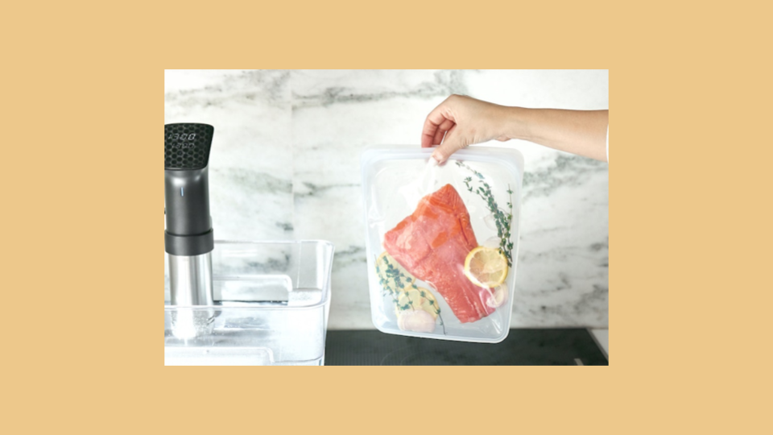
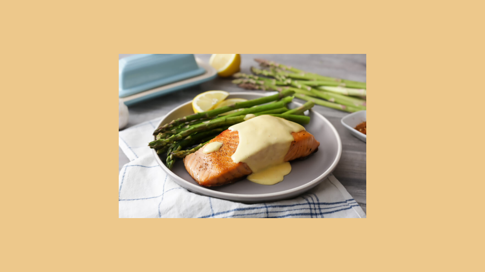

This week I am extremely excited about a new cooking technique called sous vide.
In sous vide cooking, you submerge the food (usually vacuum-sealed in plastic) into a water bath that is precisley set to the target temperature you want the food to be cooked to.
In his book, Cooking for Geeks, Jeff Potter describes it as "ultra-low-temperature-poaching"
Next month, we will be serving Sous Vide Salmon with Dill Hollandaise. To reserve a seat at the chef table, contact us before November 30.
blackgoose@example.com
555-336-1800
Warning: sous vide cooked salmon is not pasteurized. Avoid it if you are pregnant or have immunity issues.
All Content Copyright © 2017 Black Goose Bistro & Jennifer Robbins